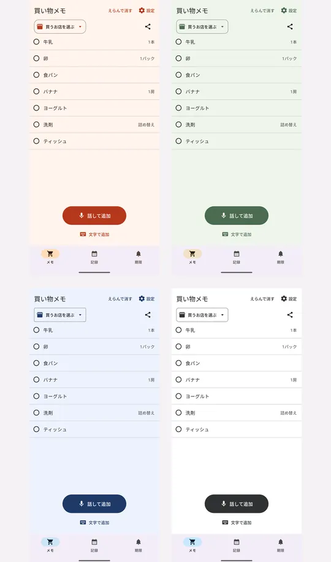
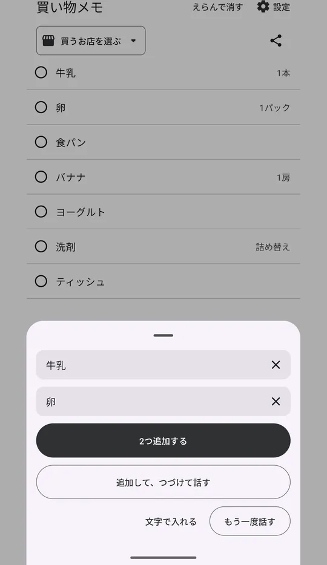
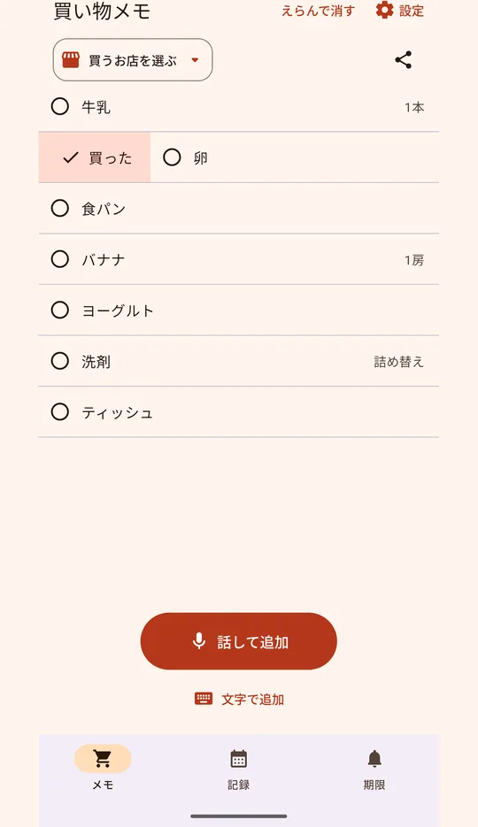
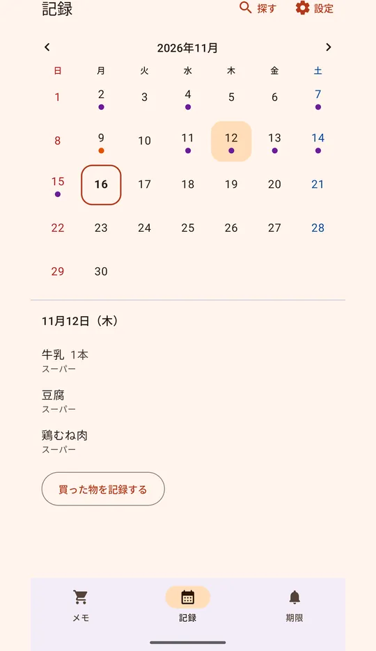
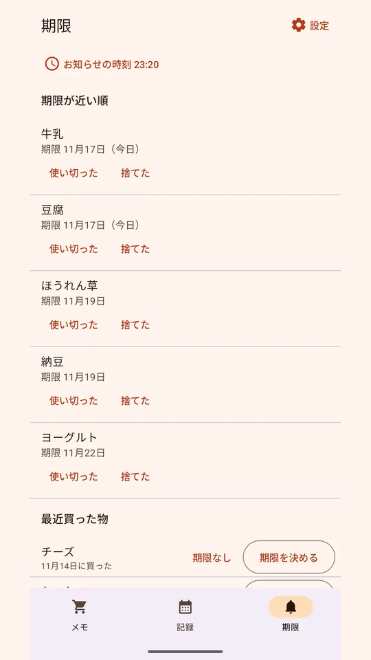
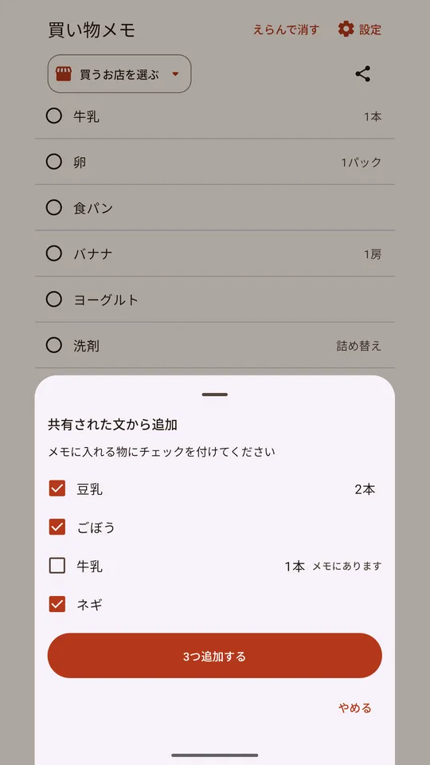
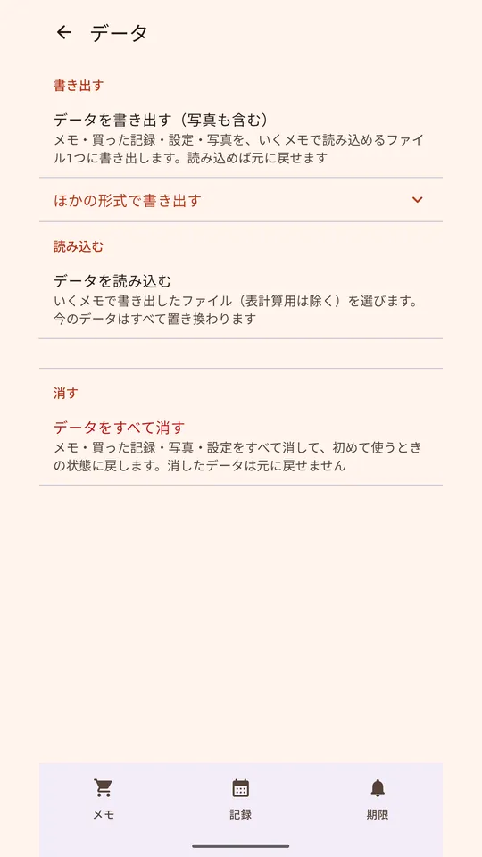
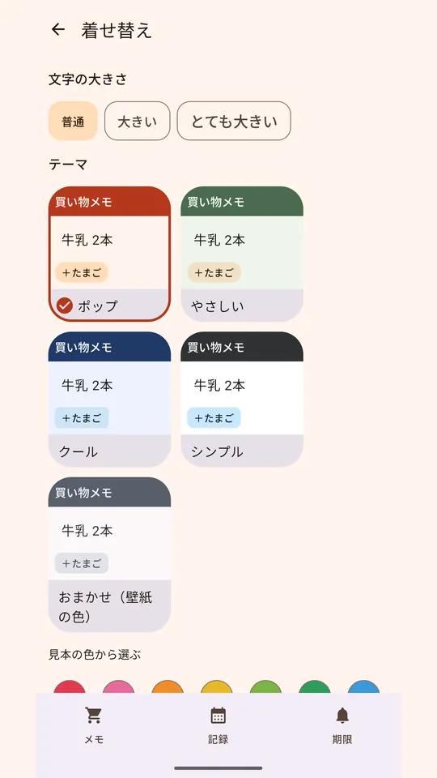

Android アプリ
話すだけ、
話すだけ、
いく前メモ。
買い物に「いく」ときの、いちばん身近な「メモ」。いく前に話して残す。買ったらスワイプで記録。 その記録が、次にいくときの「いつもの」になります。

使い方の流れ
話して入れて、買ったら右へ。それだけで記録が残ります。
-

1 話して追加 -

2 買ったら右へ -

3 記録に残る
機能
「いく → 買う → 残る → またいく」をくり返すほど、あなた好みに育っていくメモです。
-
話す
話すだけでメモ
「牛乳とたまご」と話すと、2つに分かれて入ります。「牛乳 2 本」のように数も入ります。文字でも入れられ、前に入れた物が候補に出ます。
-
スワイプ
買ったら右へ、やめたら左へ
動かすだけで記録できます。間違えても「元に戻す」ですぐ戻せます。「えらんで消す」で、いらない物をまとめて消せます。
-
記録
買った物が日付ごとに残る
「記録」のカレンダーで、「牛乳 いつ買った？」も品名で探せます。いつものお店を選べば、どこで買ったかも残ります。
-
期限
期限の前の日にお知らせ
使い切りたい物は、期限を決めておけば前の日に通知します。
-
送る・取り込む
LINE などで送る、受け取る
メモを LINE などへ送れます。受け取った文は、取り込んでメモにできます。
-
書き出し
機種変更のときも安心
メモ・買った記録・設定をファイルに書き出して、読み込めます。
-
ウィジェット
ホーム画面から
「話して追加」と「メモ一覧」の2つのウィジェットを置けます。写真を付けて、銘柄の買い間違いも防げます。
-
見た目
自分好みの見た目
4つのテーマ、背景の写真、文字の大きさ、暗い画面を選べます。
画面
実際の画面です。
-

期限が近い物を見渡せる -

届いた文を取り込む -

書き出し・読み込み -

見た目を選ぶ
プライバシー
- アカウントの登録はいりません。広告も、利用状況の解析もありません。
- メモや記録は、お使いの端末の中にだけ保存します。アプリはインターネットに接続しません。
- ご意見フォームは、ボタンを押すと外部のブラウザで開きます。開くときに、アプリの版・Android の版・機種名がページの URL に入ります。ご意見の内容は、自分で送信したときだけ届きます。
- 音声入力は端末の音声認識サービスを使います。
詳しくはプライバシーポリシーを参照してください。